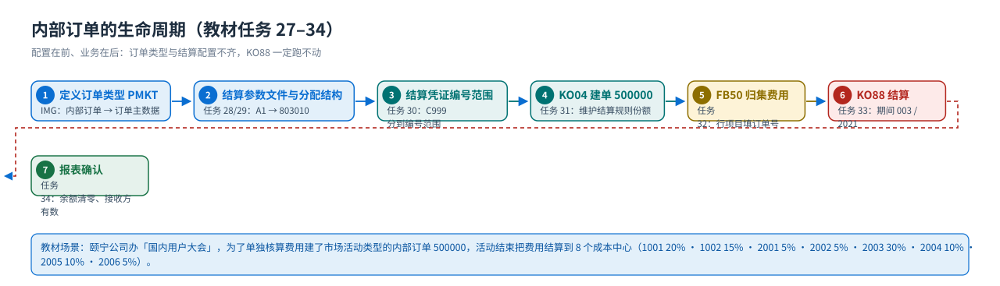
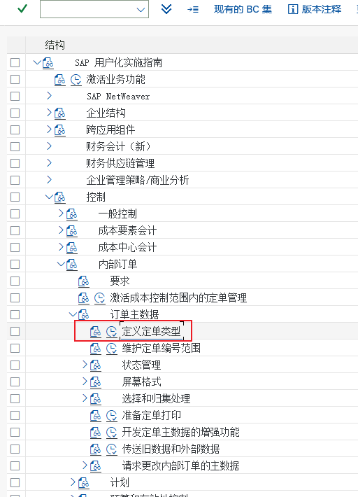
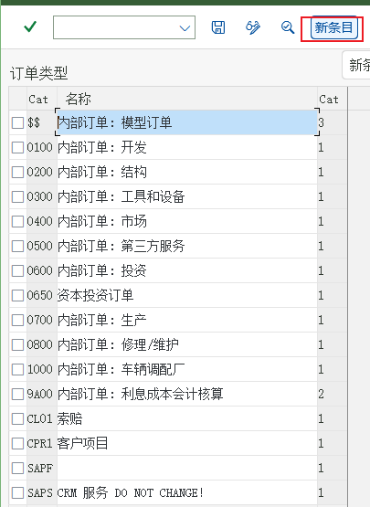
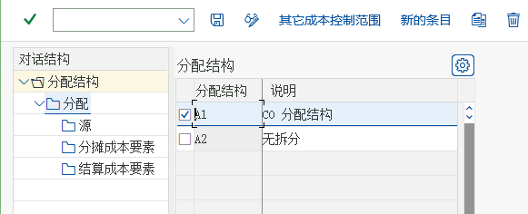
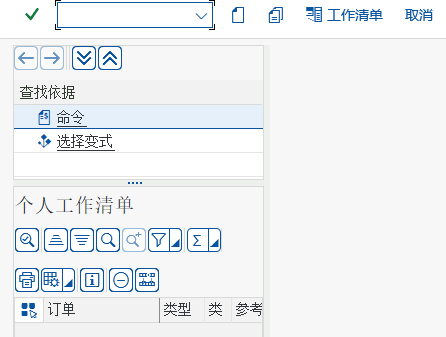
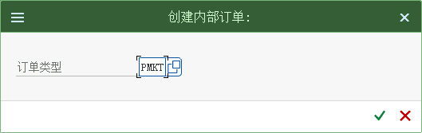
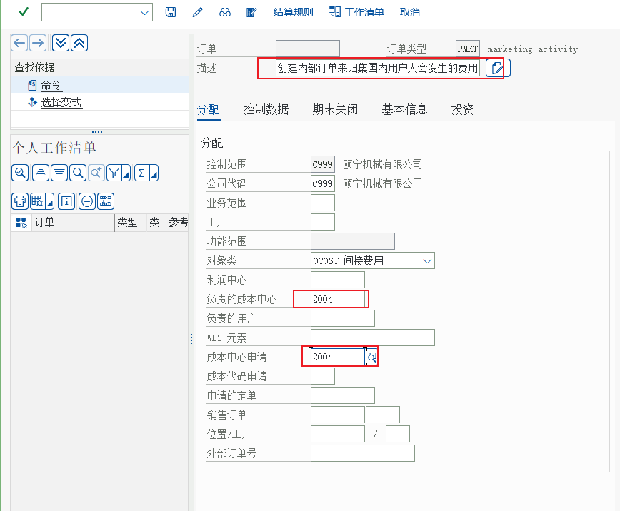
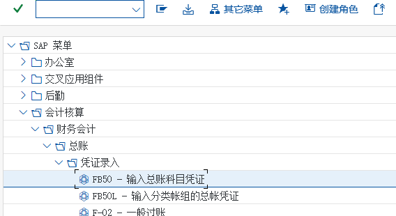
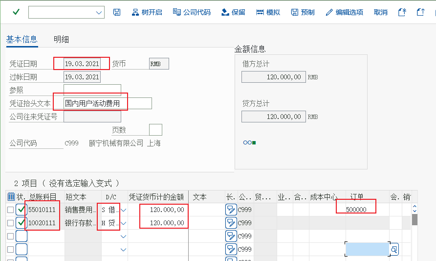
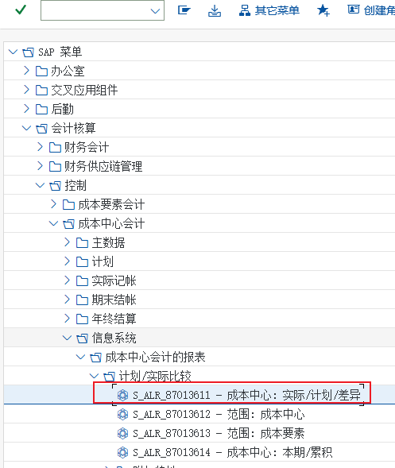

流程② 内部订单
订单类型 PMKT · KO04 建单 · 结算规则 · 费用归集 · KO88 结算
内部订单（CO-OM-OPA）管的是「一次性的项目型费用」：公司要办一场国内用户大会，费用不该混在部门日常费用里，于是建一个内部订单来专门归集，活动结束再把订单上的费用结算到各成本中心。教材任务 27–34 就是这一篇的现场。
教学场景与前置条件
| 前置 | 内容 | 教材任务 |
|---|---|---|
| 场景 | 颐宁公司要办「国内用户大会」，费用单独核算 → 用内部订单（订单类型 PMKT 市场活动） | 27、31 |
| 组织 | 成本控制范围 C999、8 个成本中心（1001 20% · 1002 15% · 2001 5% · 2002 5% · 2003 30% · 2004 10% · 2005 10% · 2006 5%） | 04、31 |
| 结算配置 | 订单类型 → 结算参数文件（画面 20）→ 分配结构 A1 → 结算成本要素 803010 | 27–30 |
| 编号范围 | 订单类型的编号范围、结算凭证编号范围（C999） | 27、30 |
| 费用数据 | 用 FB50 录入订单费用（行项目填订单 500000） | 32 |
成本中心适合「长期存在的部门」（财务部每月都有费用）；内部订单适合有始有终的一次性活动（用户大会、展会、研发项目、工会活动）。它可以有订单类型（决定字段与结算规则）、预算与可用性控制（教材未演示）、以及一条明确的结算规则。
教材的判断标准很好用：「希望能对这次活动单独核算费用，而不是在成本中心各种费用中」—— 这句话就是「要不要建内部订单」的判据。
订单生命周期一张图
{kind=link}

① 定义订单类型与编号范围（任务 27）
创建内部订单类型并维护编号范围
解释：颐宁公司将要举行 “ 国内用户大会” 为了这次市场推广活动，公司会发生很多费用，我们希望能对这次活动单独核算费用，而不是在成本中心各种费用中。公司中类似的“ 项目”还有很多，在 SAP 管理会计中我们可以用“内部订单”来管理这些项目。项目有各种类型，如市场类的，研发类的，工会活动类的等等。

画面 1教材《S4.docx》· CO 任务 27 创建内部订单类型并维护编号范围 · 原图 01_1_image479.png 
画面 2教材《S4.docx》· CO 任务 27 创建内部订单类型并维护编号范围 · 原图 01_2_image480.png 
画面 3教材《S4.docx》· CO 任务 27 创建内部订单类型并维护编号范围 · 原图 01_3_image481.png
{kind=link}
{kind=link}
② 结算参数文件（任务 28）
维护内部订单的结算参数文件
解释：为了举行“国内用户大会”公司创建了“市场活动”订单类型，其中结算参数文件选择的是系统中已经有的 100，本步骤中，我们来检查结算参数文件 100 的设置

画面 4教材《S4.docx》· CO 任务 28 维护内部订单的结算参数文件 · 原图 01_1_image490.png 双击“维护结算参数文件”

画面 5教材《S4.docx》· CO 任务 28 维护内部订单的结算参数文件 · 原图 02_1_image491.png
③ 分配结构与结算成本要素（任务 29）
维护内部订单结算的分配结构
后台－控制－内部订单－实际过账－结算－维护分配结构

画面 6教材《S4.docx》· CO 任务 29 维护内部订单结算的分配结构 · 原图 01_1_image494.png 
画面 7教材《S4.docx》· CO 任务 29 维护内部订单结算的分配结构 · 原图 02_1_image495.png 双击分配

画面 8教材《S4.docx》· CO 任务 29 维护内部订单结算的分配结构 · 原图 03_1_image496.png
{kind=link}
④ 结算凭证编号范围（任务 30）
维护结算凭证编号范围
后台－控制－内部订单－实际过账－结算－维护结算凭证编号范围

画面 9教材《S4.docx》· CO 任务 30 维护结算凭证编号范围 · 原图 01_1_image500.png 
画面 10教材《S4.docx》· CO 任务 30 维护结算凭证编号范围 · 原图 01_2_image501.png
⑤ KO04 创建内部订单（任务 31）
创建内部订单
KO04会计－控制－内部订单－主数据－KO04-订单管理员

画面 11教材《S4.docx》· CO 任务 31 创建内部订单 · 原图 01_1_image503.png 解释：我们已经创建了市场活动订单类型，我们将在此类型下创建内部订单来归集国内用户大会发生的费用。

画面 12教材《S4.docx》· CO 任务 31 创建内部订单 · 原图 02_1_image504.png 点击新建

画面 13教材《S4.docx》· CO 任务 31 创建内部订单 · 原图 03_1_image505.png 然后点击保存然后点击保存

画面 14教材《S4.docx》· CO 任务 31 创建内部订单 · 原图 04_1_image506.png
{kind=link}
{kind=link}
{kind=link}
| 结算规则的一行 | 教材值（订单 500000） | 含义 |
|---|---|---|
| 接收方类别 | CTR（成本中心） | 也可以结到总账科目、资产、订单、WBS（标准功能） |
| 接收方 | 1001 20% · 1002 15% · 2001 5% · 2002 5% · 2003 30% · 2004 10% · 2005 10% · 2006 5% | 份额合计必须是 100%，否则 KO88 会报「结算规则不完整」 |
| 结算成本要素 | 803010（来自分配结构 A1） | 接收方看到的就是它 |
| 结算参数文件 | 画面 20 / 教材文字 100 | 决定可用接收方类别与分配结构 |
⑥ 费用归集到订单（任务 32）
输入内部订单费用发票
FB50解释：
会计核算－财务会计－总帐－凭证录入－FB50-输入总账科目凭证
画面 15教材《S4.docx》· CO 任务 32 输入内部订单费用发票 · 原图 01_1_image513.png 
画面 16教材《S4.docx》· CO 任务 32 输入内部订单费用发票 · 原图 02_1_image514.png
{kind=link}
{kind=link}
KO03 显示订单 → 点「实际行项目」，或 KOB1 直接看订单行项目；② 报表：KOB1/订单信息系统（KO1x 系列）看订单实际成本；③ 表：AUFK 订单主数据、COEP 行项目（PAROBJ 指向订单）。⑦ KO88 结算（任务 33）
内部订单的结算
KO88解释：颐宁公司举办了国内用户大会，并为此创建了内部订单来归集发生的费用。本步骤中我们将把订单中归集的费用结算到各个成本中心中去。
控制－内部订单－单一功能－结算－KO88-单个处理
画面 17教材《S4.docx》· CO 任务 33 内部订单的结算 · 原图 01_1_image517.png 
画面 18教材《S4.docx》· CO 任务 33 内部订单的结算 · 原图 02_1_image518.png 
画面 19教材《S4.docx》· CO 任务 33 内部订单的结算 · 原图 03_1_image519.png 注意无错误，运行已经完成
| KO88 的字段 | 教材值 | 含义 / 影响 |
|---|---|---|
| 订单 / 期间 / 财年 | 500000 · 003 · 2021 | 结算的是这一期的余额；期间错 → 成本落到别的月份 |
| 处理类型 | 1（自动） | 自动结算只处理有结算规则的对象 |
| 过账日期 | 31.03.2021 | CO 凭证的过账日期，必须在期间范围内 |
| 控制范围 / 货币 | C999 / CNY | 由订单主数据与订单类型带出 |
| 测试运行 | （教材未演示） | 先测试运行看会结到哪、结多少，确认后再正式跑 |
| 执行结果 | 「无错误，运行已经完成」（含结算凭证号） | 结算凭证金额 = 订单当期余额 |
⑧ 看结算结果（任务 34）
显示内部订单的结算结果
会计－控制－成本中心会计－信息系统－成本中心会计的报表－计划/实际比较－成本中心：实际/计划/差异

画面 20教材《S4.docx》· CO 任务 34 显示内部订单的结算结果 · 原图 01_1_image520.png 
画面 21教材《S4.docx》· CO 任务 34 显示内部订单的结算结果 · 原图 02_1_image521.png
{kind=link}
内部订单的字段读法（最常被问的 8 个）
| 字段 | 在哪 | 含义 |
|---|---|---|
AUFK-AUFNR 订单号 | 订单主数据 | 教材 500000；编号来自订单类型的编号范围 |
AUFK-AUART 订单类型 | 订单主数据 | PMKT 市场活动；决定字段状态与结算参数文件 |
AUFK-PHAS1/2 结算参数文件 | 订单类型 / 订单主数据 | 决定分配结构与可用接收方 |
COBRA 结算规则 | 订单主数据 → 结算规则 | 接收方 + 份额 + 结算成本要素（表 COBRB） |
COEP-WTGBTR 金额 | 订单行项目（KOB1） | 订单归集到的成本金额 |
COEP-PAROBJ 伙伴对象 | 订单行项目 | 费用的对方成本对象（成本中心） |
| 订单状态 | 控制数据 / 状态栏 | CRTD 已创建 → REL 已释放 → TECO 技术完成 → CLSD 已关闭（标准流程） |
COBK-BUKRS 公司代码 | CO 凭证抬头 | 跨公司代码结算时的归属 |
常见错误与排查
| 症状 | 原因 | 处理 |
|---|---|---|
| 建单时订单类型选不到 PMKT | 订单类型没保存成功，或编号范围没维护 | 回 IMG 检查订单类型与编号范围（任务 27） |
| KO88 报「结算规则不完整」 | 结算规则的份额合计 ≠ 100% | KO02 改结算规则，把份额补到 100% |
| KO88 报「没有分配结构 / 结算成本要素」 | 结算参数文件没挂分配结构，或分配结构里没配结算成本要素 | 检查 参数文件 → 分配结构 A1 → 结算成本要素 803010（任务 28/29） |
| KO88 报「没有可结算的余额」 | 当期没有归集到费用，或上期已经结算过 | KOB1 看订单行项目确认余额 |
| 结算后成本中心看不到费用 | 接收方成本中心的报表期间/选择条件不对，或份额给了别的成本中心 | 按接收方逐个查报表（任务 34），并核对结算规则份额 |
| 订单上一直挂着余额 | 只做了测试运行，或结算被中断 | 正式运行 KO88（去掉测试运行标记），或批量 KO8G |
与上下游的关系
- 上游主数据与配置：订单类型（IMG）、结算参数文件、分配结构、结算成本要素、编号范围 —— 这一串是「一条链」，断一环 KO88 就跑不动。
- 上游费用：FB50/FB60 行项目上必须填订单号，否则费用进不了订单（账户分配里的「订单」字段）。
- 横向：订单也能接收分配/分摊进来的成本（循环的接收方可以选订单，教材未演示），以及作业成本（报工到订单，见 产品成本篇）。
- 下游：结算把余额交给成本中心（教材做法）；也可以交给总账科目/资产/WBS（标准功能）。
- 教材未演示、项目必用的订单功能：预算与可用性控制（
KO22/KO23维护预算、KOB2看可用性）、订单计划（KPF6）、承诺管理（KO34查看）、批量结算（KO8G）、订单状态管理（KO02修改 /TECO技术完成）。